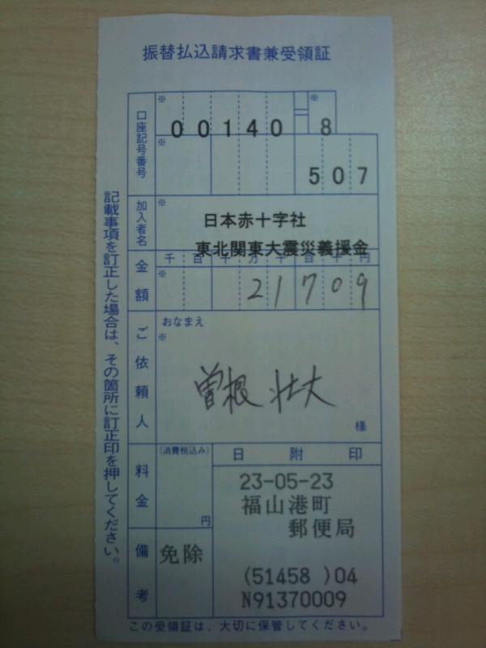

オープンセミナー2011@岡山
オープンセミナー2011@岡山は開催を終了しました。
当日ご参加戴いた皆様、ありがとうございました。
?当日参加人数
130名
?開催風景
開催風景はこちらを参照ください。
?ビデオ・資料
IPv4枯渇後に向けてのISPの取り組み
CSS Nite in OKAYAMAの紹介
岡山県におけるRubyの取組み
コミュニティ紹介LT
Java SE 7 で切り開く新しい Java の世界について
多言語パラダイムを前提とした設計手法
- 資料
- セッション資料（PDF）(3151)
App Engine - Google I/O の果実
?募金
会場内でオープンソースカンファレンス広島（OSC広島）スタッフにより実施されていた、東日本大震災に対する募金について、たくさんのご協力をいただきました。ありがとうございました。
OSC広島のスタッフの曽根さんより、募金の結果の連絡をいただいております。
- 金額
- 21,709円
- 振込先
- 日本赤十字社
- 領収書画像
- 
?開催概要
オープンセミナー2011＠岡山
http://openseminar.okaya.ma/
オープンセミナーはソフトウェア技術をテーマにした無料セミナーです。
このセミナーの企画と運営は技術系ユーザコミュニティのボランティア
で行われています。昨年は香川県高松市、徳島県徳島市、愛媛県松山市、
岡山県総社市、広島県広島市で開催された実績があります。すばらしい
講師陣である事は講師名で検索して頂くと直ぐに分ります。コミュティ
主催のセミナーに参加が初めての方もお気軽にお越し下さい。
■開催日時：2011年5月21日（土） 10:00から17:00
受付開始：9:30～
■開催場所：岡山県立大学 学部共通棟（南）8206室
http://www.oka-pu.ac.jp/
岡山県立大学 キャンパス平面図
http://www.oka-pu.ac.jp/information/campusmap.html
■アクセス：電車または車でお越し下さい。（無料駐車場あり）
http://www.oka-pu.ac.jp/information/access.html
電車の場合は、以下のURLから、
出発駅： 岡山,到着駅： 服部で検索してください。
http://mydia.jr-odekake.net/search/mobile.cgi
■参加費： 無料
■昼食会： お弁当費用1000円（事前にお申し込みください）
■懇親会： Ryoutei(http://www.233-3959.com/ryoutei/index.html）
費用4000円（事前にお申し込みください。学生は半額。）
■参加申し込み：
http://kokucheese.com/event/index/9378/
注意事項
当日、大学の食堂は12:00-13:00利用できます。メニューが限られているので
弁当を持参されるのも良いと思います。
----------------------------------------------------------------------
■オープニング（10:00～10:10）
・実行委員長 挨拶
・会場諸注意等
■午前の部（10:10～12:00）
10:10～10:50
【タイトル】IPv4枯渇後に向けてのISPの取り組み
【講師】
株式会社倉敷ケーブルテレビ 技術部次長
小山海平
【概要】
IANAの在庫枯渇、APNICの枯渇が現実となった。枯渇後のxSPの考え方、
アクションプラン、旬な取り組みを紹介します。
11:00～11:15
【タイトル】CSS Nite in OKAYAMAの紹介
【講師】
株式会社CODE54 代表取締役 後藤 誠
【概要】
CSS Niteとは／開催のきっかけ、想い／CSS Nite in OKAYAMA開催概要
11:15～11:30
【タイトル】岡山県におけるRubyの取組み
【講師】
社団法人システムエンジニアリング岡山 Ruby普及コーディネータ
宇野 寛三
【概要】
岡山県におけるRubyのビジネス活用事例等を紹介します
■昼食（11:30～12:30）
■コミュニティ紹介（12:30～13:15）
○ Okayama IT Engineers Community（樋口さん）
○ 岡山WEBクリエイターズ（後藤さん）
○ 岡山Ruby, Ruby on Rails 勉強会（山口さん）
○ すくすくスクラム瀬戸内（阿部さん）
○ 中国 Google Technology User Group（横山さん）
○ 天領倉敷Scala（すみださん）
○ 日本アンドロイドの会 （英吉さん）
■午後の部（13:25～17:00）
13:25～14:25
【タイトル】Java SE 7 で切り開く新しい Java の世界について
【講師】
日本オラクル株式会社
シニア Java エバンジェリスト
寺田 佳央 (http://yoshio3.com)
【概要】
2006 年 Java SE 6 が登場し５年が経過し、今夏ついに待望の
Java の新バージョン Java SE 7 がリリースされます。
本セッションでは Java SE 7 で提供される新機能や言語仕様
の変更点等を分かり易く紹介します。
14:35～15:35
【タイトル】多言語パラダイムを前提とした設計手法
【講師】
日本マイクロソフト株式会社
エバンジェリスト
荒井 省三（http://blogs.msdn.com/b/shozoa/）
【概要】
メニーコアやクラウド・コンピューティングが台頭してきているように、
新しいコンピューティング・インフラが身近になっています。このような
インフラを有効活用しようとすると、今までの設計手法を考え直す必要が
でてきます。適材適所という言葉がありますが、システム構築において
本当に適材適所を実践できているかと言えば、?が付くことでしょう。
システム構築における適材適所を実践するには、幅広い知識や経験だけ
でなく、参加するメンバーの意欲なども重要な要素です。適材適所を
実践するために、動的言語や関数型言語の組み合わせ方を含めて、
開発手法の進化の方向性などを説明します。
15:55～16:55
【タイトル】App Engine - Google I/O の果実
【講師】
グーグル株式会社
DeveloperAdvocate
松尾 貴史
【概要】
App Engine もリリースされてから 3 年になりました。これまで様々な
機能がコンスタントにリリースされてきましたが、中でもGoogle I/O
の時期は沢山の機能がリリースされます。今年も例外ではありません。
それら新しい機能の中から幾つかを選んで解説します。
----------------------------------------------------------------------
■主催: オープンセミナー岡山実行委員会
■共催： 岡山Javaユーザ会
瀬戸内Linuxユーザ会（STLUG）
四国BSDユーザ会（S*BUG）
天領倉敷scala
中国 Google Technology User Group
岡山WEBクリエイターズ
岡山Ruby, Ruby on Rails 勉強会
オープンラボ岡山
Okayama IT Engineers Community
すくすくスクラム瀬戸内
■後援：
岡山県立大学
オープンソースカンファレンス実行委員会
社団法人 システムエンジニアリング岡山
岡山県
山陽新聞社
■スポンサー：
[ プラチナ ]
日本オラクル株式会社
[ ゴールド ]
株式会社岡山情報処理センター
株式会社ランバーミル
株式会社アイアットOEC
■講師陣のプロフィール等は公式サイト（http://openseminar.okaya.ma/）を
ご覧ください。
----------------------------------------------------------------------
印刷用ポスター（PDF）(1287)
印刷用ポスター（JPEG）(1056)


{kind=link}
Copyright(C)2011 オープンセミナー2011@岡山実行委員会 All rights reserved.